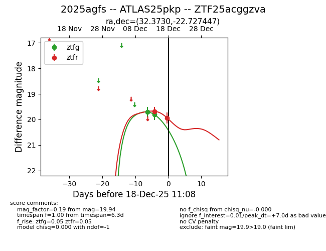
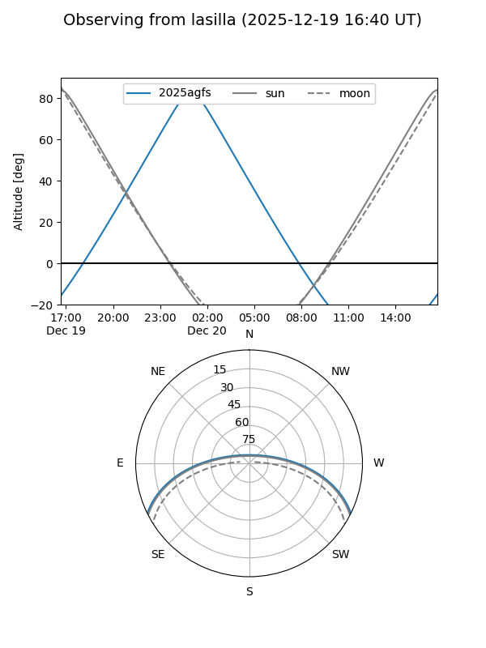
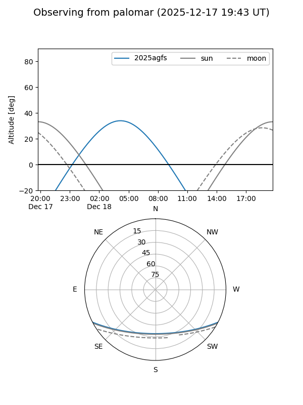

2025agfs
Target 2025agfs at 2025-12-18 11:18
Aliases and brokers:
FINK: fink-portal.org/ZTF25acggzva
Lasair: lasair-ztf.lsst.ac.uk/objects/ZTF25acggzva
ALeRCE: alerce.online/object/ZTF25acggzva
TNS: wis-tns.org/object/2025agfs
YSE: ziggy.ucolick.org/yse/transient_detail/2025agfs
alt names
ZTF25acggzva (ztf,fink_ztf)
2025agfs (tns,yse)
ATLAS25pkp (atlas)
Coordinates:
equatorial (ra, dec) = 32.3730,-22.72745
equatorial (HMS+DMS) = 02:09:29.52,-22:43:38.81
galactic (l, b) = (203.2477,-71.78721)
Photometry
last ztfg=19.81, ztfr=19.94
2 ztfg, 2 ztfr detections
Lightcurve

Visibility


Additional plots